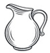
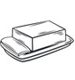

Производственные процессы в молочной отрасли – это последовательная поэтапная переработка с получением в результате целого ряда
молочных продуктов различной плотности, консистенции и жирности. Изготовление качественных молочных продуктов – натуральных,
полезных, вкусных – возможно только при строгом соответствии ГОСТам, соблюдении санитарных и технологических норм.
Большой выбор молочных продуктов собственного производства предлагает Вам наша компания - один из флагманов молочной отрасли.
Собственные молочные фермы

Производство молока
Производство кефира
Производство творога
Производство сметаны

Производство сливочного масла
Производство йогурта
Категории и наименования оборудования для производства молока
Профильное масштабное производство молока как сырья для изготовления молочной продукции всегда оснащено комплексом оборудования, обеспечивающим полный производственный цикл – от приемки до фасовки. Рассмотрим классификацию агрегатов и установок.
- Оборудование для приемки, учета и хранения молока – фильтры, установка УПМ, мутовки, технологические столы, мойки, резервуары и танки для хранения.
- Сепараторы, очистители, гомогенизаторы, мембранные фильтрации и насосы для переработки молока.
- Теплообменные аппараты и установки, пастеризаторы, пластинчатые охладители, резервуарные пастеризаторы.
- Специальное оборудование непосредственно для изготовления молочной продукции – творога, сыра и т. д.
Производство молочной продукции в России активно развивается. Согласно прогнозам экспертов до 2022 года рост продаж составит 1,2% в год. Одним из факторов позитивного влияния на эту тенденцию является расширение ассортимента продуктов из молока, появление безлактозных молочных продуктов.
Информация для партнеров
Наша компания осуществляет оптовые поставки молочной продукции собственного производства в торговые сети, а также на многие предприятия из разных регионов России.
Как сделать оптовый заказ?
Чтобы сделать заказ молочных продуктов, позвоните по многоканальному телефону или отправьте заявку онлайн нашим специалистам по электронной почте.
Условия сотрудничества для оптовых покупателей
Информацию для заключения договоров поставки продовольственных товаров и о существенных условиях такого договора можно получить по электронной почте или телефону.